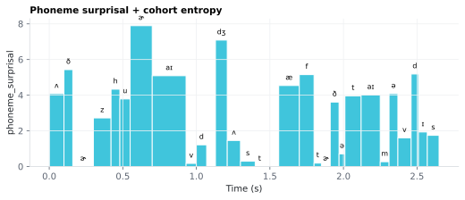

On this page
6.3.8Phoneme surprisal + cohort entropy
Two per-phoneme columns on <stim>_phonemes.csv, computed from a frequency-weighted cohort model of spoken-word recognition (Marslen-Wilson 1978) — the classic idea that hearing a word activates
6.3.8.1What it is
Two per-phoneme columns on <stim>_phonemes.csv, computed from a
frequency-weighted cohort model of spoken-word recognition
(Marslen-Wilson 1978) — the classic idea that hearing a word
activates every lexicon entry consistent with the sound heard so far
(the "cohort"), and that cohort narrows phoneme by phoneme until only
one word remains:
| Column | Meaning |
|---|---|
phoneme_surprisal |
Information (bits) gained by hearing this phoneme — how much the cohort's total frequency mass shrank. |
cohort_entropy |
Shannon entropy (bits) of the remaining cohort's frequency distribution immediately after this phoneme is heard — how uncertain the identity of the word still is. |
Both are context-independent: they depend only on a static,
frequency-weighted prior over the lexicon (no sentence context, no
language model). This is a deliberate design choice (§ Implementation)
that keeps phoneme_surprisal decorrelated from the model-driven
word-level Surprisal column, which is
sentence-context-driven — the two features are meant to enter a TRF
model as separate, complementary predictors.
6.3.8.2See it

6.3.8.3In your output
| token | ARPABET | phoneme_surprisal | cohort_entropy |
|---|---|---|---|
| Others | AH | 4.085 | 4.324 |
| Others | DH | 5.434 | 0.8929 |
| Others | ER | 0 | 0.8924 |
| Others | Z | 2.727 | 0.2059 |
| who | HH | 4.337 | 6.194 |
| who | UW | 3.79 | 1.525 |
| arrived | ER | 7.897 | 2.659 |
| arrived | AY | 5.092 | 2.647 |
| arrived | V | 0.177 | 2.18 |
| arrived | D | 1.219 | 0.0059 |
| just | JH | 7.091 | 6.381 |
| just | AH | 1.464 | 1.891 |
| variable | size | MATLAB class |
|---|---|---|
phoneme_surprisal | 1292 × 1 | double |
cohort_entropy | 1292 × 1 | double |
phoneme_onset | 1292 × 1 | double |
word_onset | 1292 × 1 | double |
t | 1292 × 1 | double |
fs | 1 × 1 | double |
6.3.8.4MATLAB
% Load the phoneme-level table (one row per phoneme)
T = readtable('phoneme/LJ002-0321_phonemes.csv', 'TextType', 'string');
T.Properties.VariableNames % every column in the file
head(T(:, {'token', 'ARPABET', 'phoneme_surprisal', 'cohort_entropy'}), 10) % this feature's columns (first rows)
% Plot
ok = ~isnan(T.Onset);
stem((T.Onset(ok) + T.End(ok)) / 2, T.phoneme_surprisal(ok)); xlabel('Time (s)'); ylabel('phoneme_surprisal')
S = load('phoneme/LJ002-0321_phoneme_surprisal.mat');
whos('-file', 'phoneme/LJ002-0321_phoneme_surprisal.mat') % variables, sizes, classes
stem(S.t, S.phoneme_surprisal, 'Marker', 'none') % impulse at each phoneme onset
xlabel('Time (s)'); ylabel('phoneme surprisal (bits)')
6.3.8.5How it's computed
A phoneme-prefix trie is built once over the pronunciation lexicon. Every trie node caches two accumulators over all lexicon words whose pronunciation passes through it:
Z = Σ f(w) # total frequency mass of the cohort at this node
SFL = Σ f(w) · log2 f(w) # precomputed term for the entropy closed form
For a word's aligned phoneme sequence φ1 … φn, walking the trie
root → node-after-φ1 → … → node-after-φn:
surprisal(φk) = log2(Z_before) − log2(Z_after)
entropy(φk) = log2(Z_after) − SFL_after / Z_after
Z_before is the cohort mass at the node reached before consuming
φk (for φ1, this is the trie root — the full lexicon, i.e. the
word-initial/empty-context prior); Z_after is the mass after
consuming it. entropy is evaluated at the after node — this
matches the Gillis formulation (entropy of the cohort matching
phonemes "from word onset to the current phoneme," inclusive) and is
load-bearing: evaluating entropy at the before node instead gives
the wrong value once a word's cohort narrows to a single member
(entropy should reach exactly 0 there, not one phoneme later).
The surprisal formula is algebraically the log-frequency-ratio form of
Gillis 2021's definition, surprisal_i = −log2(freq(cohort_i) / freq(cohort_{i−1})), since freq(cohort) here is Z (summed lexicon
frequency mass, not a raw count) and log2(a/b) = log2(a) − log2(b).
Out-of-vocabulary (OOV) path. If the aligned phoneme sequence
steps off the trie entirely (a pronunciation not present anywhere in
the MFA dictionary — e.g. an unusual variant the aligner produced),
every phoneme from that point on gets surprisal = cap and
entropy = 0, where cap = −log2(f_min / Z_root) is the surprisal of
the single rarest lexicon word. This avoids log2(0) and gives OOV
phonemes the maximum surprisal a real dictionary entry could have,
rather than an arbitrary sentinel.
⚠️ spn rows score NaN — which is a different claim from the cap.
An out-of-dictionary word MFA could not pronounce is aligned to its single
unknown-word phone spn (see phoneme,
Pron_Source == 'oov_unresolved'). Those rows get phoneme_surprisal and
cohort_entropy of NaN, not the cap. The two mean different things
and conflating them corrupts a TRF design matrix:
| Meaning | Value | |
|---|---|---|
| OOV cap | A real, identified phoneme sequence walked off the lexicon trie. The phones are known; no dictionary word matches them. Maximum surprisal is a defensible estimate. | cap / entropy = 0 |
NaN |
There is no phoneme identity to score at all. spn is not a phoneme; it is MFA's placeholder for "I don't know what was said here." No cohort can be defined, so no number is meaningful. |
NaN |
Assigning the cap to spn would assert that a maximally surprising phone
occurred — a strong, unfounded claim about a row whose phonetic content is
simply unknown. NaN says "no measurement", which is the truth, and it
propagates correctly: NaN impulses are skipped by the .mat rasterizer
and are visible to any downstream dropna. If you would rather exclude
these rows entirely, filter on Pron_Source.
Before 2026-07-27 the question never arose, because spn was filtered out
as silence upstream and out-of-dictionary words produced no phoneme rows
at all — see phoneme.
Frequency floor. A dictionary word with wordfreq frequency 0
(present in the MFA lexicon but not observed in the combined corpus
blend backing wordfreq) is not dropped — it is floored to f_min, the
minimum nonzero frequency in the lexicon, and stays in the trie. This
keeps the OOV cap reserved for pronunciations genuinely absent from
the dictionary, rather than firing on every merely-rare word.
6.3.8.6In the code
Source: sensi/extractors/phoneme_surprisal.py.
Lexicon and frequency source
load_mfa_lexicon(dict_path, strip_stress=True, primary_only=True)
parses data/mfa_data/pretrained_models/dictionary/english_us_arpa.dict —
the exact dictionary MFA aligned against, so the trie's phoneme
inventory matches the aligned phones tier exactly. Each line is
word\tPH PH PH …; MFA bracket tokens ([bracketed], <unk>) and
silence/noise phones (sil, sp, spn) are skipped. strip_stress
drops the trailing ARPABET stress digit (EH1 → EH) so the trie
matches on bare phoneme identity, consistent with how phoneme_id
grouping already treats stress as a separate concern from phoneme
identity. primary_only keeps only the first-listed pronunciation
variant per word (MFA dictionaries list multiple pronunciations for
some words). Frequency f(w) comes from wordfreq.word_frequency(w, "en") — the same linear-frequency source already behind the
Zipf_Freq word column (wordfreq's combined English list: SUBTLEX
subtitles blended with Wikipedia/books/news/web — see
freq_subtlex for the provenance caveat), so the
cohort prior and the existing frequency column are drawn from the
same source.
Trie construction and caching
build_cohort_trie(entries) computes f_min (minimum nonzero
frequency across entries), floors any f == 0 word to it, then builds
the trie top-down: each lexicon word is inserted by walking from
the root to its final phoneme, adding f/f·log2 f to z/sfl at
every node along that root-to-leaf path (creating child nodes as
needed). After all words are inserted, every node's z/sfl are
exact sums over the lexicon words passing through it — each
phoneme_scores call is then O(sequence length) with O(1) work
per phoneme (CohortTrie.walk).
get_cohort_trie(dict_path, strip_stress, primary_only) memoizes the
built trie in a module-level _TRIE_CACHE keyed on those three
arguments, since parsing and building over the ~200k-entry dictionary
is expensive and the trie is identical for every stimulus in a run.
Guard flags: context-independent, word-initial-empty-context
phoneme_scores(trie, phones, *, context_independent=True, first_phoneme_empty_context=True) exposes two keyword flags that are
not prefs/GUI-editable — any non-default value raises
NotImplementedError. They document the modeling commitment at the
API level rather than adding permanent prefs-schema surface for a mode
that doesn't exist yet:
context_independent=True— only the static unigram-frequency prior is implemented; an LM-reweighted, sentence-context-dependent cohort prior is a possible future batch (see § EEG rationale on why keeping this context-independent is the point).first_phoneme_empty_context=True— the first phoneme of a word is scored against the full-lexicon (empty-context) prior at the trie root, following Brodbeck 2022's convention ("At word onset, the prior for each word is proportional to its frequency"). Gillis 2021 instead drops the first phoneme of each word from analysis rather than assigning it an empty-context score; we follow Brodbeck and keep every phoneme.
CSV integration
add_phoneme_surprisal(phon_df, dict_path=DEFAULT_DICT_PATH, strip_stress=True, primary_only=True) groups the already-aligned
phonemes_df rows (syllabify_pairs's output) by
(doc_id, sentence_id, token_in_sentence_id) — i.e. per word, in
phoneme order — reads each row's ARPABET column, which is already
stress-free, scores the sequence with phoneme_scores, and appends two
new float columns, phoneme_surprisal and cohort_entropy, rounded
to 4 decimal places. When strip_stress=False (a stress-sensitive trie)
the fused form is rebuilt as ARPABET + Stress, skipping Stress where
it is NA. Groups whose phones are silence or spn are skipped and left
NaN. It does not touch _PHON_COLUMNS in
syllabify.py; the two columns are additive. Per-column drop is wired
through _PHONEME_COLUMN_MAP in sensi/pipeline.py exactly like the
ARPABET/Stress/IPA/Pron_Source/Onset/End/Duration phoneme
columns, gated by feat_phoneme_surprisal / feat_phoneme_cohort_entropy.
⚠️ Reading ARPABET rather than the old fused Label was mandatory, not
cosmetic: after the 2026-07-27 column split there is no Label column on
the phoneme frame, so the old code would have raised KeyError — the loud
failure mode. The quiet one was next door in
P_Center, which detected vowels via
Label.str[-1:].str.isdigit() and now uses Stress.notna().
.mat sidecar: value + control impulse trains
phoneme_surprisal_mat_vars(phon_df, duration_s, analysis_sr, config)
rasterizes the per-phoneme scores onto a shared analysis grid
(N = round(duration_s * analysis_sr), mirroring
acoustic/<stim>_acoustic.mat's grid convention), producing four
length-N column vectors written to
phoneme/<stim>_phoneme_surprisal.mat:
phoneme_surprisal,cohort_entropy— value-modulated impulse trains (impulse height = the phoneme's score), one intended per TRF/banded-ridge band.phoneme_onset— unit-height impulse at every phoneme onset.word_onset— unit-height impulse at each word-initial phoneme's onset only.
Impulses are placed at round(onset_s * analysis_sr) using the same
MATLAB-style half-away-from-zero rounding as acoustic_ts._mround
(_mround is duplicated here rather than imported, to keep the two
extractors independent). Same-sample collisions sum for the two
value trains and stay at unit height for the two control trains.
⚠️ That summing rule interacted with a real data bug, fixed 2026-07-27. Contractions and possessives used to emit their phoneme rows twice (spaCy's
was+n'tboth claimed MFA's singlewasn'tinterval), so the duplicated rows landed on identical sample indices and summed — thephoneme_surprisalandcohort_entropytrains carried doubled impulses at every contraction, andword_onsetfired twice at one instant. Nothing raised. Deduplicating the phoneme rows insyllabify_pairsfixed the.matoutput as a side effect. If you have archived.matsidecars from before that date and your stimuli contain contractions, they are affected and should be regenerated.
The
file also carries t = arange(N)/analysis_sr, fs = analysis_sr, and
a config struct recording analysis_sr, strip_stress,
primary_only, context_independent, first_phoneme_empty_context,
cap, n_phonemes, duration_s, and the lexicon path — full
provenance for reproducing the run.
Emitting both phoneme_onset and word_onset (rather than a single
all-phoneme-onset control) lets a downstream analyst either use them
directly, or recover exactly the control set from Brodbeck 2018/
Brodbeck 2022 — word onsets plus phoneme onsets restricted to
non-word-initial phonemes — by subtracting: phoneme_onset − word_onset.
Config surface
Functional prefs (change the numbers): strip_stress, primary_only,
analysis_sr (default 128 Hz, matching Brodbeck 2018/Brodbeck
2022's and Gillis 2021's analysis rate and the acoustic level's
default). Extractor-API guard flags (documented above; not
prefs-editable): context_independent, first_phoneme_empty_context.
This feature requires audio + MFA alignment — there is no text-only
mode, since phoneme onsets come from forced alignment.
6.3.8.7Library
No new third-party dependency — wordfreq is already a project
dependency (it backs Zipf_Freq); the MFA dictionary already ships
under data/mfa_data/.
from wordfreq import word_frequency
# Parse one MFA dictionary line: "word\tPH PH PH"
line = "cat\tK AE1 T"
word, phones = line.split("\t")
phones = phones.split() # ["K", "AE1", "T"]
freq = word_frequency(word, "en") # linear frequency (wordfreq blend)
# Build the trie once, then score a word's aligned phones in O(1)/phoneme:
# trie = build_cohort_trie(load_mfa_lexicon(dict_path))
# surprisals, entropies = phoneme_scores(trie, ["K", "AE", "T"])
6.3.8.8EEG rationale
Phoneme-by-phoneme cohort surprisal and entropy are established TRF/cortical-tracking predictors for naturalistic speech listening, distinct from (and largely orthogonal to) sentence-level language-model surprisal:
- Brodbeck 2018 used cohort-model phoneme surprisal and cohort entropy as MEG/EEG TRF predictors and showed the auditory cortex rapidly transforms acoustic input into these lexical-access variables during continuous natural speech listening.
- Brodbeck 2022 extended this to a full model comparison across sentence-, word-, and phoneme-level linguistic statistics (including a frequency-weighted cohort prior — prior ∝ word frequency — plus explicit word-onset and phoneme-onset control predictors) and found each level of representation contributes independent explanatory power to MEG responses, i.e. phoneme-level cohort surprisal/entropy is not redundant with sentence-level surprisal.
- Gillis 2021 used the same cohort surprisal/entropy formulation as an EEG neural marker of speech comprehension, showing it explains unique EEG-tracking variance over acoustic features alone.
- Donhauser 2020 showed phonemic-prediction neural responses are
enhanced when sentence-level context is unreliable — i.e.
sub-lexical/phoneme-level predictive processing (what this feature
captures) and sentence-level predictive processing (what GPT-2
Surprisalcaptures) are separable neural computations, not the same signal measured twice.
Together these are why phoneme_surprisal is offered alongside GPT-2
Surprisal rather than instead of it. Brodbeck 2022 found that a model
using "the phonemes in the current word alone" (the same kind of
word-internal cohort model as this feature) "uniquely predict[s] some
part of early neural responses" alongside a model that uses sentence
context. One step is still ours: their sentence-context model predicts
phonemes, while GPT-2 Surprisal is a word-level value, so the two
SensiExtractor columns are related to, not identical with, the models they
compared.
6.3.8.9Papers
- Marslen-Wilson 1978 Marslen-Wilson, Welsh. Processing interactions and lexical access during word recognition in continuous speech. Cognitive Psychology 10(1), 29–63. ScienceDirect — the cohort model of spoken-word recognition: hearing a word activates all lexicon entries consistent with the input so far, narrowing as more of the word is heard.
- Brodbeck 2018 Brodbeck, Hong, Simon. Rapid transformation from auditory to linguistic representations of continuous speech. Current Biology 28(24), 3976–3983.e5. doi:10.1016/j.cub.2018.10.042 — introduces cohort-model phoneme surprisal and cohort entropy as MEG/EEG TRF predictors, plus word-onset and (non-word-initial) phoneme-onset controls.
- Brodbeck 2022 Brodbeck, Bhattasali, Cruz Heredia, Resnik, Simon, Lau. Parallel processing in speech perception with local and global representations of linguistic context. eLife 11, e72056. doi:10.7554/eLife.72056 — frequency-weighted cohort prior (proportional to COCA word frequency), first phoneme scored with the word-initial/empty-context prior, and word-onset + phoneme-onset control predictors; shows phoneme-, word-, and sentence-level representations each contribute independent MEG-response variance.
- Gillis 2021 Gillis, Vanthornhout, Simon, Francart, Brodbeck. Neural Markers of Speech Comprehension: Measuring EEG Tracking of Linguistic Speech Representations, Controlling the Speech Acoustics. Journal of Neuroscience 41(50), 10316–10329. doi:10.1523/JNEUROSCI.0812-21.2021 —
surprisal_i = −log2(freq(cohort_i)/freq(cohort_{i−1})); cohort entropy = Shannon entropy of the cohort matching phonemes from word onset to the current phoneme (inclusive); 128 Hz analysis rate. ⚠️ Author list live-verified as Gillis, Vanthornhout, Simon, Francart & Brodbeck (not Di Liberto). - Donhauser 2020 Donhauser, Baillet. Two Distinct Neural Timescales for Predictive Speech Processing. Neuron 105(2), 385–393.e9. doi:10.1016/j.neuron.2019.10.019 — phonemic-prediction neural responses are enhanced when sentence-level context is unreliable, evidence that phoneme-level and sentence-level predictive processing are separable computations.